Gerenciamento de obras
Planejamento, cronograma, fornecedores e acompanhamento diário para a obra andar no ritmo combinado.
Falar sobre gerenciamento ↗Engenharia e gerenciamento de obras especializados em academias. Em todo o Brasil.
Estrutura, fachada, instalações e acabamento.
Cada etapa pensada para o dia em que a academia abre as portas.
Sua próxima unidade começa aqui.
Falar sobre minha obra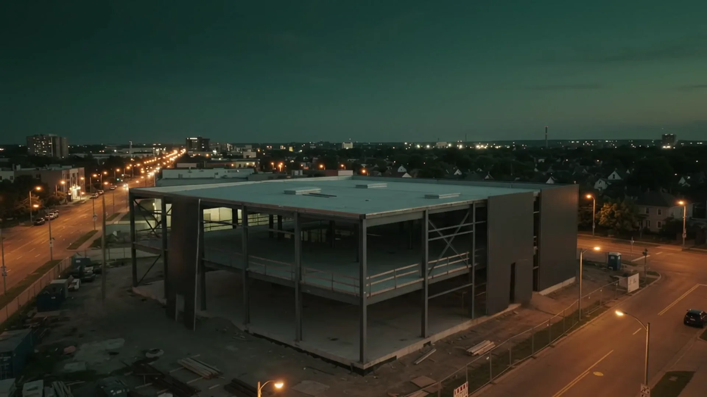
A Seed Engenharia gerencia e executa obras com um foco claro: academias. Da adequação do imóvel à unidade pronta para receber alunos, acompanhamos cada etapa ao lado da rede, do franqueado ou do investidor.
Obras entregues para grandes redes do fitness, em diferentes cidades e estados do país.
Redes que já confiaram na SeedSmart Fit · Panobianco · Ultra · Gaviões · Yardz
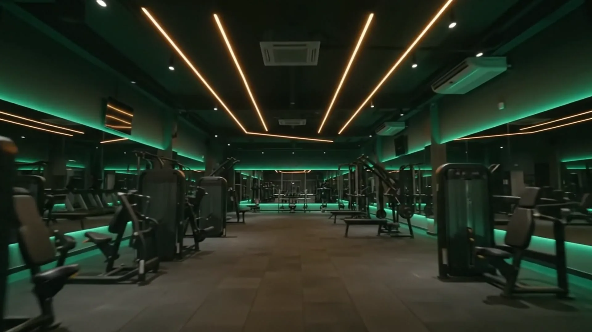
Uma academia recebe carga, impacto, calor e movimento o dia inteiro. Por isso, cada decisão da obra começa pelo uso real do espaço.
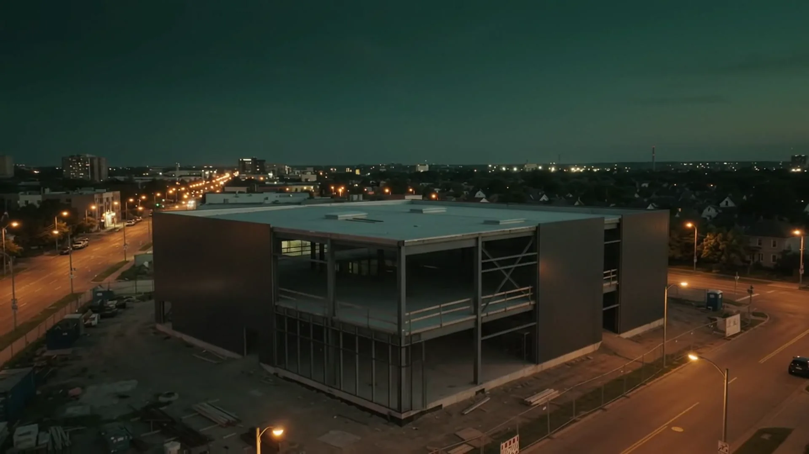
Conte em que fase está o seu projeto e definimos juntos o melhor formato de trabalho.
Planejamento, cronograma, fornecedores e acompanhamento diário para a obra andar no ritmo combinado.
Falar sobre gerenciamento ↗Da obra nova à adaptação de um galpão, loja ou andar comercial para virar academia.
Falar sobre a execução ↗Obras que seguem o manual da rede, com o acabamento e a identidade que o aluno reconhece em qualquer cidade.
Sou rede ou franqueado ↗Unidades entregues para algumas das maiores redes de academias do país. Toque para assistir ou ampliar.
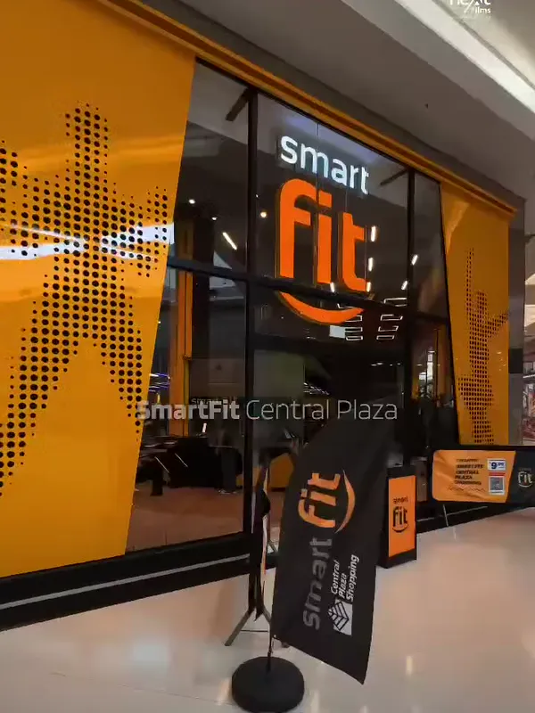
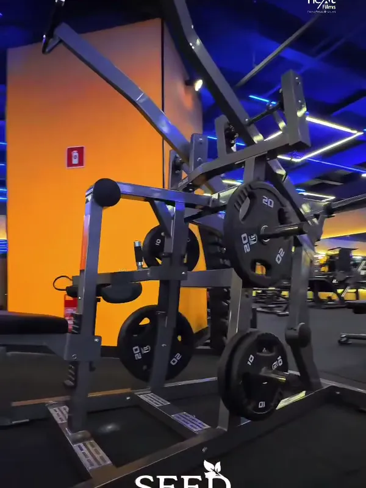
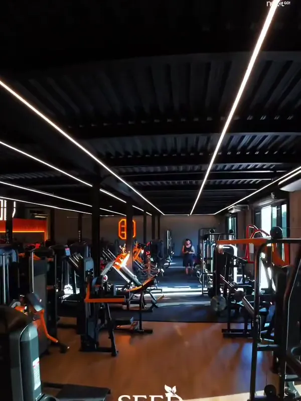
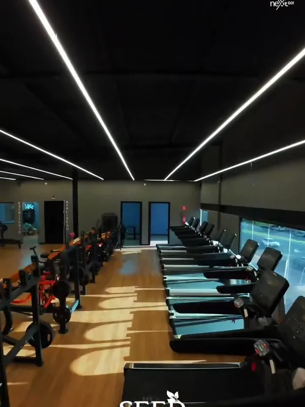
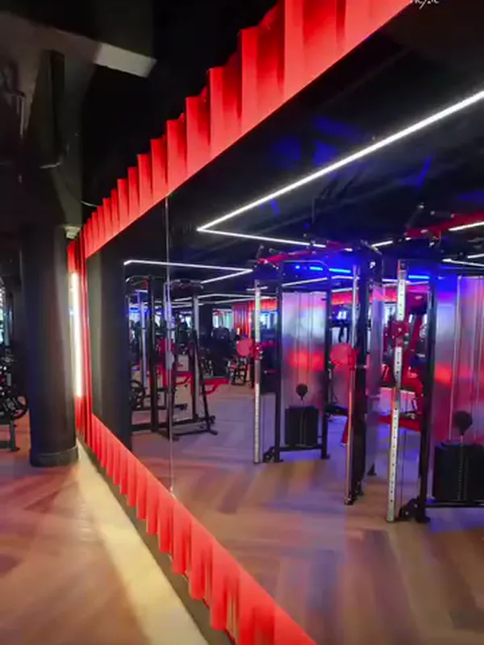
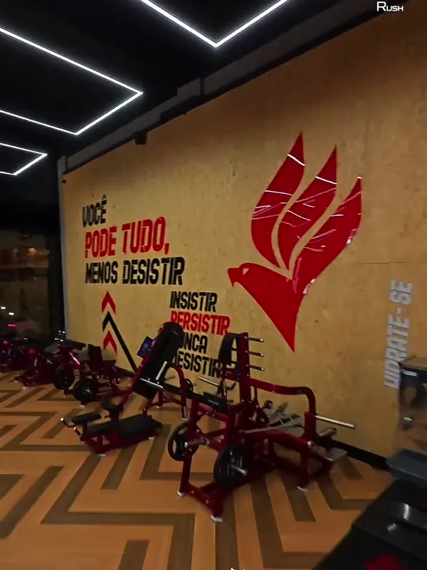
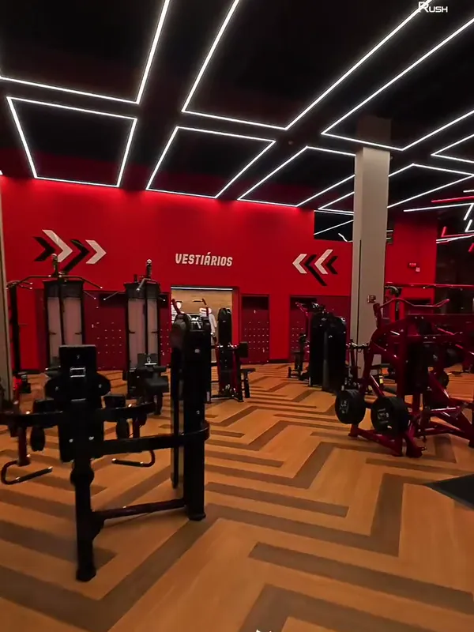
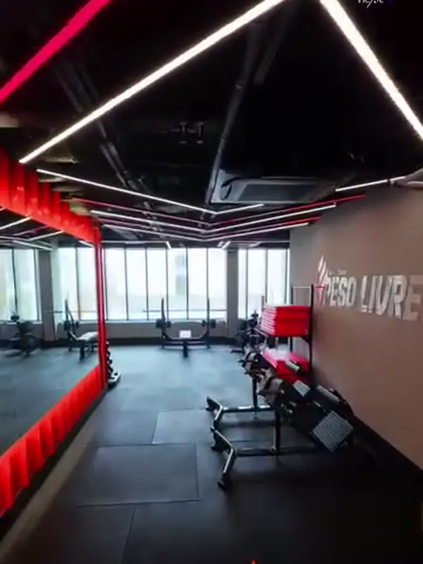
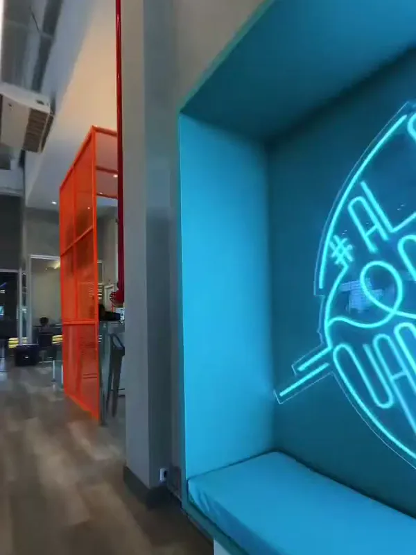
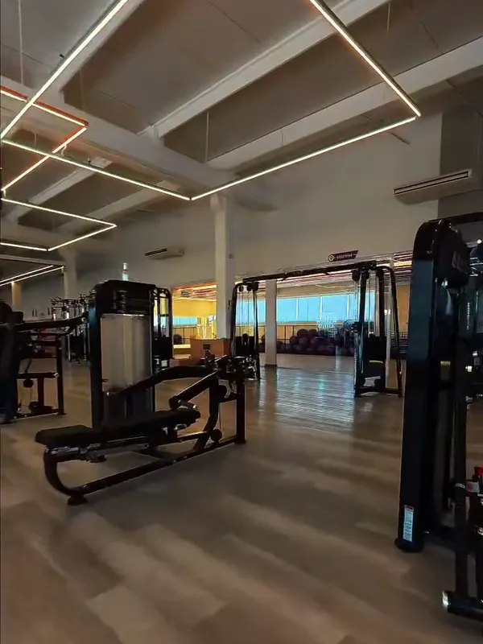
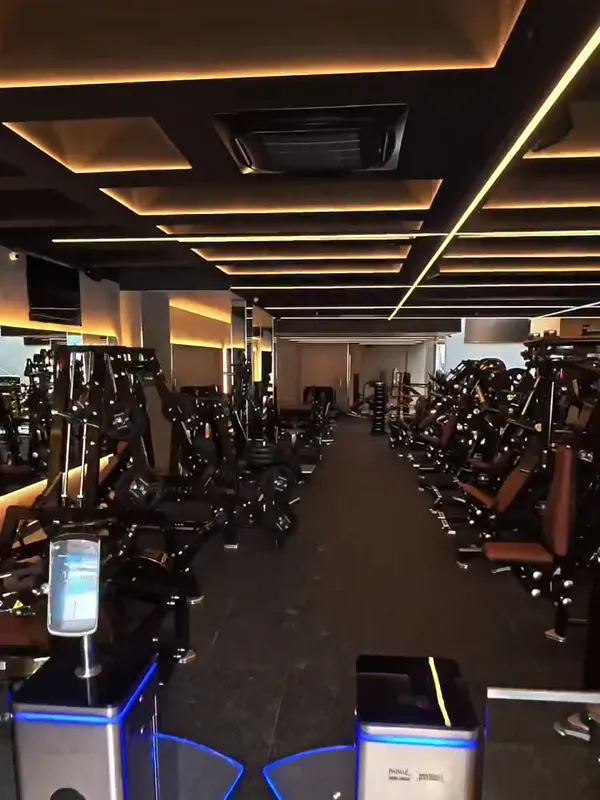
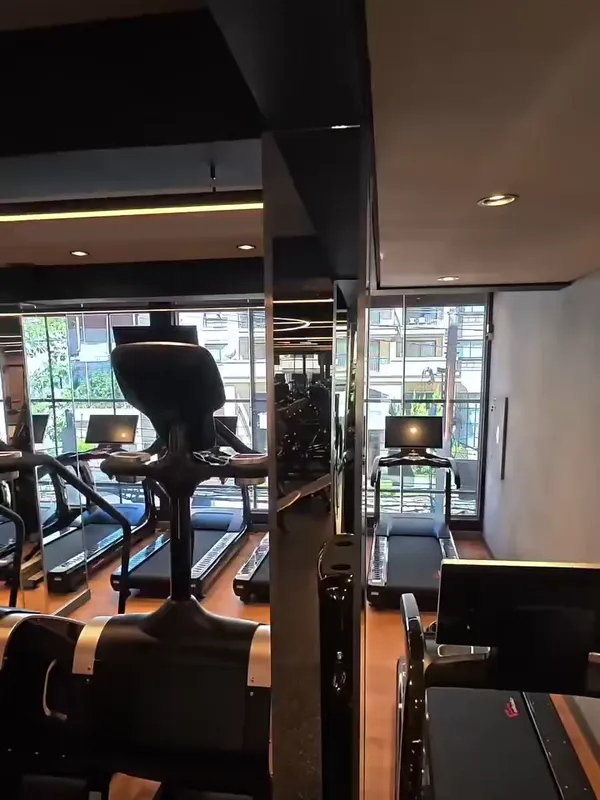
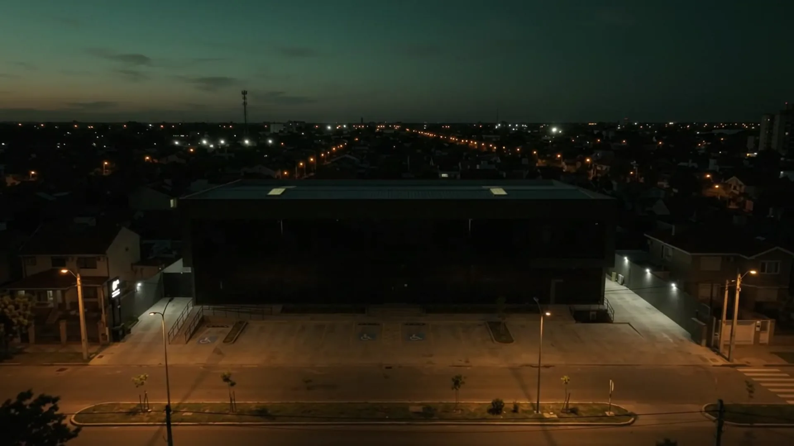
Nossa equipe acompanha obras em vários estados. A logística é planejada desde o início para que a distância não pese no cronograma.
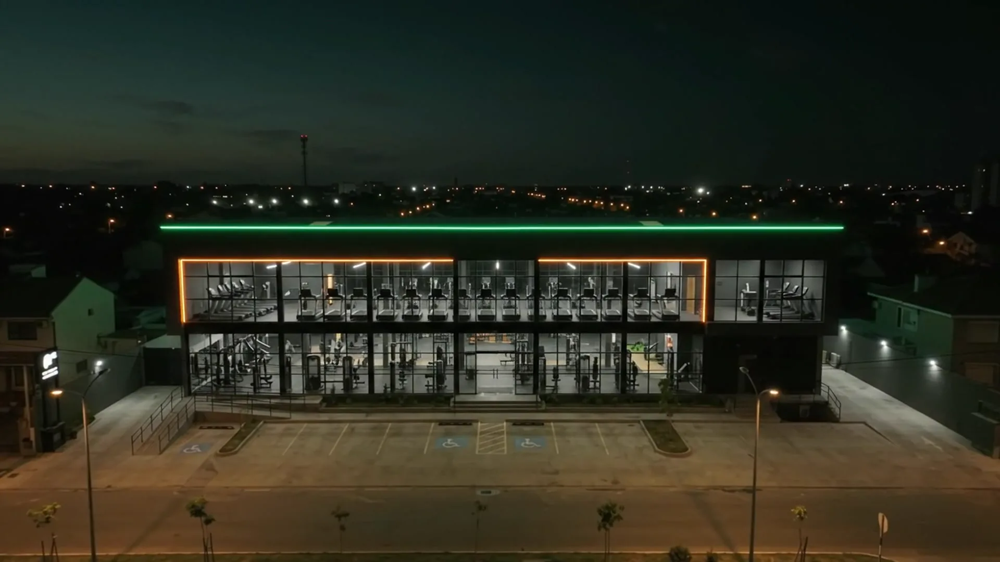
Sim. Atuamos em todo o Brasil e já temos obras em São Paulo, no Rio de Janeiro, em Salvador e em outras cidades. Informe o local da obra no primeiro contato.
Academias são a nossa especialidade e o foco da Seed. Se você tem outro tipo de obra comercial, fale com a gente para avaliarmos.
Sim. Já entregamos unidades para redes como Smart Fit, Panobianco, Ultra Academias, Academia Gaviões e Yardz House, seguindo o padrão de cada marca.
Cidade e endereço do imóvel, metragem aproximada, fotos do espaço, o projeto (se já tiver) e a data prevista de inauguração.
Depende do tamanho, do estado do imóvel e do escopo. O cronograma é definido no orçamento, já pensando na data de inauguração.
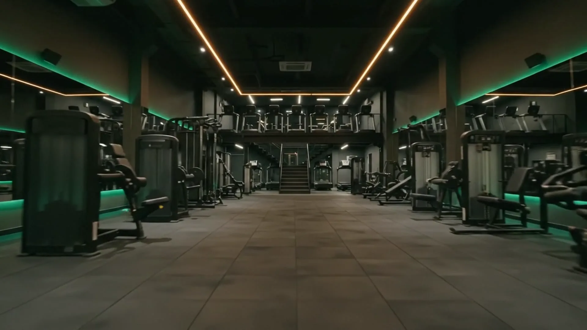
Fale direto com a equipe da Seed. Para agilizar, mande na conversa: